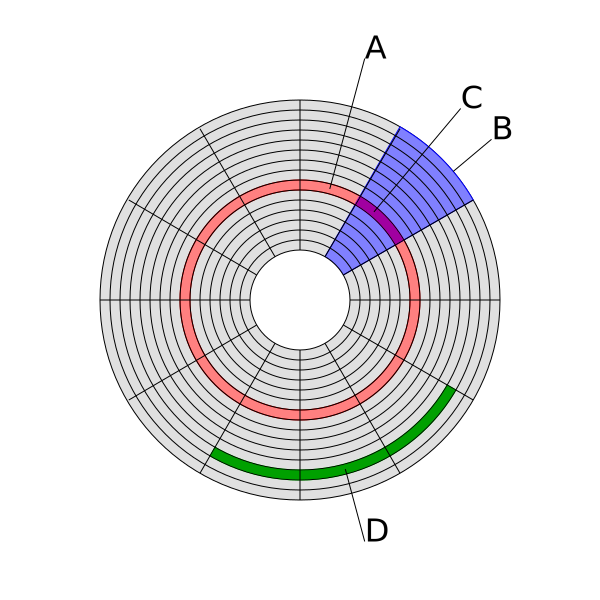

Índice
-
Arquitecturas de ordenador
Arquitecturas de ordenador
Clasificación
-- Von Neumann
-- estructura --|
| -- Hardvard
| -- CISC
|-- conjunto instrucciones --|-- RISC
| -- SISC
| -- 1
-- número de núcleos --|
-- +1
Según la estructura
- Arquitectura de Von Neumann:
- CPU (Unidad Central de Proceso)
- ALU (Unidad Aritmético Lógica). Con registros del procesador.
- UC(Unidad de Control). Con registro de instrucciones y contador de programa.
- Memoria para guardar datos e instrucciones.
- Mecanismos de entrada y salida.
-
Características
-
La búsqueda de instrucciones y una operación de datos comparten el mismo bus por lo que no pueden hacerse a la vez.
- La unidad de control indica que operación realizar en cada momento (contador de programa).

-
Arquitectura Hardvard: tiene un conjunto de direcciones y buses separados para instrucciones y datos.
La arquitectura de Von Neumann es más sencilla la de Hardvard, pero la de Hardvard es más moderna. Ambas son sistemas de programas almacenados, es decir, guardan las instrucciones de programa y los datos en una memoria de lectura y escritura.
Según el conjunto de instrucciones
- Arquitectura CISC (Complex Instruction Set Computer).
-
Microprocesadores con un conjunto de instrucciones amplio.
-
Son capaces de realizar operaciones complejas.
-
Los operandos de estas operaciones pueden estar en memoria o en registros internos.
-
Son anteriores a los RISC.
-
Arquitectura RISC (Reduced Instruction Set Computer)
- Microprocesadores con instrucciones de tamaño fijo.
- Conjunto de instrucciones reducido.
- Realizan operaciones simples.
- A diferencia de CISC solo las instrucciones de carga y almacenamiento acceden a memoria.
- Facilitan la segmentación y el paralelismo.
-
Arquitectura SISC (Simple Instruction Set Computer)
Según el número de núcleos
- Un núcleo: el microprocesador tiene 1 CPU
- Varios núcleos: hay varias CPU que leen y ejecutan instrucciones a la vez. Esto aumenta la velocidad de las aplicaciones que estén adaptadas al procesamiento paralelo.
Algoritmos de Planificación
-- FIFO
|-- Roun Robin
|-- SJF
-- SRTF
Contolan qué procesos se tienen que ejecutar en el procesador en cada momento y el orden. Evitan que un proceso acapare todo el tiempo del procesador.
Los 3 estados que puede tener un proceso son:
- Listo.
- Bloqueado.
- En ejecución.
Algoritmos de planificación:
-
FIFO o (First In First Out): se encolan los procesos por orden de llegada. El primero en llegar es ejecutado, cuando este termina pasa el siguiente en la lista.
-
Round Robin:
- Usa "time-slices" o "quantums". Intervalos de tiempo asignados a cada proceso.
- Cuando un proceso termina con su tiempo, le toca al siguiente proceso en la lista, y este volvería la cola a esperar a que le toque otra vez el "quantum".
- Selfish Round Robin: se usan 2 colas, una para los procesos nuevos y otra para los procesos antiguos. Se da prioridad a los antiguos.
-
SJF (Shortest Job First): el proceso más corto se ejecuta primero. La desventaja es que los procesos largos pueden quedarse en la cola para siempre si siguen llegando procesos cortos.
-
SRTF (Short Remaining Time First): tiene prioridad al proceso que le quede menos tiempo de ejecución, este será el que coja el procesador. Es decir, si mientras se ejecuta un proceso había otro proceso que estaba en estado bloqueado (por ejemplo esperando que se liberase un recurso) y ahora está en estado "listo" y le queda menos tiempo de ejecución entonces este cogerá el procesador.
Componentes internos
-
Disco duro
- Almacena datos.
- Usa un sistema de grabación magnética.
- Es memoria no volátil.
- Hay varios discos que rotan alrededor de un eje, encima de estos platos hay un cabezal que no toca los discos y que se encarga de la lectura y escritura en ellos.
- Pista (A): cada círculo concéntrico.
- Sector (B): es una porción de cada pista.
- Sector de una pista (C).
- Cluster (D): conjunto de sectores.

- Tiempo medio de acceso: se calcula como la suma de tiempo medio de búsqueda (situarse en la pista correcta) + latencia media (situarse en el sector correcto) + tiempo lectura/escritura.
- Discos SSD (Solid State Drive): son más rápido y caros que los mecánicos clásicos.
-
Memoria RAM
- Guarda las instrucciones y datos en ejecución.
- Más rápidos pero con menos capacidad que los discos duros.
- Menos velocidad que los registros del procesador y las cachés por niveles.
- Tipos: SDR SDRAM, RDRAM, DDR SDRAM, DDR2, SDRAM, DDR3 SDRAM, DDR4 SDRAM
-
Microprocesador
- Circuito integrado que ejecuta el progarma usando instrucciones de bajo nivel (instrucciones aritméticas y lógicas).
- Puede tener 1 o varios núcleos.
- Se conecta con la placa base mediante un "zócalo", y sobre este se pone un disipador de calor, pasta térmica y un ventilador.
-
Placa base
- Todos los componentes del ordenador se conectan a este circuito gracias a los zócalos disponibles.
- Tendría zócalos para poder conectar: tarjetas PCI, memoria RAM, CPU, discos duros (SATA o IDE), dispone de varios puertos (serie, paralelo, PS/2, USB, RJ-45, VGA, jacks)
- Tiene una memoria CMOS para guardar la fecha, hora, configuración básica y la BIOS.
-
Tarjetas de expansión
- Es cualquier tarjeta que realice una tarea específica.
- La placa base tendrá alguna ranura para poder conectar la tarjeta de expansión. Normalmente será una ranura PCI (Peripheral Component Interconnect), antiguamente erán ranuras ISA. También existen unas ranuras PCI más rápidas que son las PCI-Express.
- Las tarjetas de expansión nos permiten aumentar la funcionalidad inicial. Por ejemplo podemos tener una tarjeta gráfica integrada en la placa base pero nosotros podemos ponerle una tarjeta de expansión gráfica para mejorar las capacidades iniciales del ordenador.
- Tarjeta gráfica
- Procesa datos gráficos.
- A la unidad de procesamiento de la tarjeta gráfica se llama GPU (Graphics Processing Unit).
- Algunas soportan varios monitores usando varios puertos.
-
Puede ser de dos tipos
- Discreta: se inserat en la placa base.
- Integrada: soldada a la placa base
- Tarjeta de sonido: tiene puertos de entrada y salida para audio. Normalmente tiene jacks para altavoces/auriculares, micrófono y otros.
- Tarjeta de red: permite conectar el ordenador a una red Ethernet, o por WIFI
-
Memorias no volátiles
- No necesitan energía para mantener los datos guardados.
- Ej: CD, DVD, ROM, NVRAM (non-volatile RAM)
-
Memorias volátiles
- Pierden la información si se pierde la corriente eléctrica.
- Capacidad = multiplicar el número de palabras de la memoria por le ancho de cada palabra (cada palabra pueda estar descrita en bits o en bytes)
- Ej: todos los tipos de memorias RAM (SRAM, DRAM, RDRAM, SDRAM, todas las DDR)